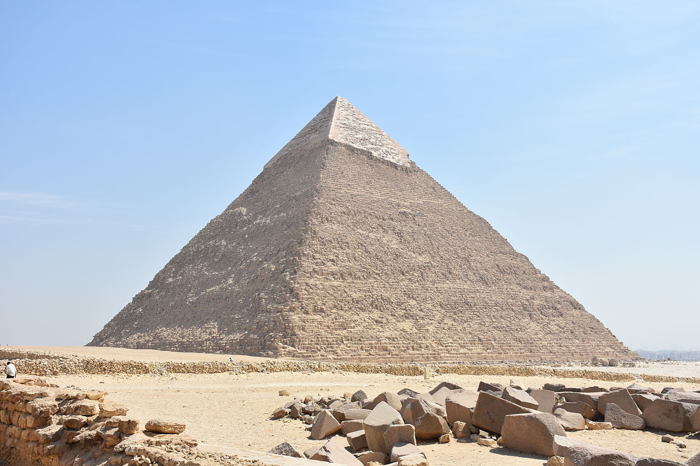

Size
The pyramid has a base length of 215.5 m (706 ft) and rises up to a height of 136.4 metres (448 ft)[1] The pyramid is made of limestone blocks weighing more than 2 tons each. The slope of the pyramid rises at a 53° 13' angle, steeper than its neighbor, the Pyramid of Khufu, which has an angle of 51°50'24". The pyramid sits on bedrock 10 m (33 ft) higher than Khufu’s pyramid, which makes it appear to be taller.

History
The pyramid was likely opened and robbed during the First Intermediate Period. During the Eighteenth Dynasty, the overseer of temple construction took casing stone from it to build a temple in Heliopolis on Ramesses II’s orders.[3] Arab historian Ibn Abd al-Salam recorded that the pyramid was opened in 1372 AD.[4]
On the wall of the burial chamber, there is an Arabic graffito that probably dates from the same time.[5]
It is not known when the casing stones of the pyramid were robbed; however, they were presumably still in place by 1646, when John Greaves, professor of Astronomy at the University of Oxford in his "Pyramidographia," wrote that, while its stones weren't as large or as regularly laid as in Khufu's, the surface was smooth and even free of breaches of inequalities, except on the south.[6]
It was first explored in modern times by Giovanni Belzoni on March 2, 1818, when the original entrance was found on the north side of the pyramid and the burial chamber was visited. Belzoni had hopes of finding an intact burial. However, the chamber was empty except for an open sarcophagus and its broken lid on the floor.[5]
The first complete exploration was conducted by John Perring in 1837. In 1853, Auguste Mariette partially excavated Khafre's valley temple, and, in 1858, while completing its clearance, he managed to discover a diorite statue.[7]
Interior
Two entrances lead to the burial chamber, one that opens 11.54 m (38 ft) up the face of the pyramid and one that opens at the base of the pyramid. These passageways do not align with the centerline of the pyramid, but are offset to the east by 12 m (39 ft). The lower descending passageway is carved completely out of the bedrock, descending, running horizontal, then ascending to join the horizontal passage leading to the burial chamber.
One theory as to why there are two entrances is that the pyramid was intended to be much larger with the northern base shifted 30 m (98 ft) further to the north which would make Khafre’s pyramid much larger than his father’s. This would place the entrance to the lower descending passage within the masonry of the pyramid. While the bedrock is cut away farther from the pyramid on the north side than on the west side, it is not clear that there is enough room on the plateau for the enclosure wall and pyramid terrace. An alternative theory is that, as with many earlier pyramids, plans were changed and the entrance was moved midway through construction.
There is a subsidiary chamber, equal in length to the c.412"-long King's Chamber of the Khufu pyramid,[10] that opens to the west of the lower passage, the purpose of which is uncertain. It may be used to store offerings, store burial equipment, or it may be a serdab chamber. The upper descending passage is clad in granite and descends to join with the horizontal passage to the burial chamber.
The burial chamber was carved out of a pit in the bedrock. The roof is constructed of gabled limestone beams. The chamber is rectangular, 14.15 m by 5 m (46.4 ft x 16 ft), and is oriented east-west. Khafre’s sarcophagus was carved out of a solid block of granite and sunk partially in the floor, in it, Belzoni found bones of an animal, possibly a bull. Another pit in the floor likely contained the canopic chest, its lid would have been one of the pavement slabs.[11]
Pyramid Complex
Satellite pyramid[edit]
Along the centerline of the pyramid on the south side was a satellite pyramid, but almost nothing remains other than some core blocks and the outline of the foundation. It contains two descending passages, one of them ending in a dead end with a niche which contained pieces of ritualistic furniture.[12]